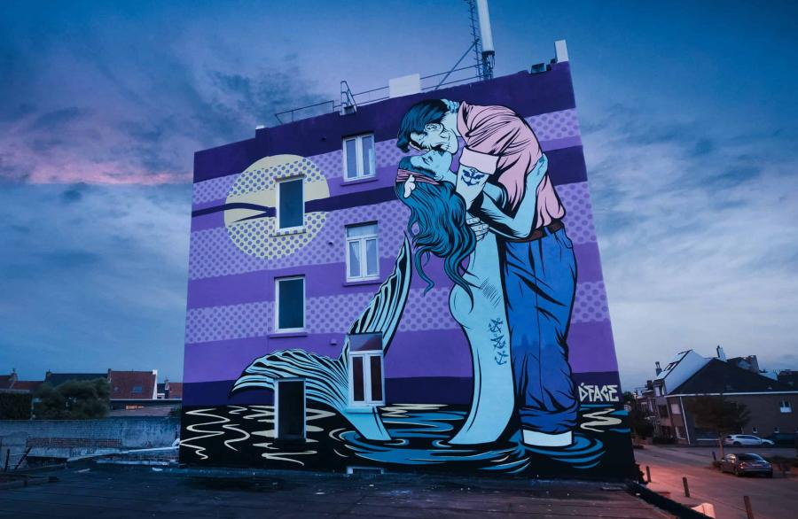

The Crystal Ship
In 2016 ging The Crystal Ship voor het eerst in Oostende voor anker. Sindsdien heeft het kunstenfestival de badstad omgetoverd in de grootste openluchtgalerie van België, met de hulp van tientallen gevierde street artists.
In 2016 ging The Crystal Ship voor het eerst in Oostende voor anker. Sindsdien heeft het kunstenfestival de badstad omgetoverd in de grootste openluchtgalerie van België, met de hulp van tientallen gevierde street artists.

In 2016 debuteerde het kunstenfestival voor het eerst in Oostende. The Crystal Ship was geboren. Het festival transformeerde de badstad tot de grootste openluchtgalerie van België met de hulp van vele bekende street artists. Internationale en nationale kunstenaars, zoals Axel Void, Paola Delfín, Escif, Miss Van, Sebas Velasco, Elian, Wasted Rita, Roa, Jaune en Strook, hebben de stad verrijkt met indrukwekkende muurschilderingen, sculpturen en installaties. Het festival draagt bij aan de levendigheid en culturele diversiteit van de stad. Het kunstenfestival versterkt Oostende in de grootste bruisende stad aan de Belgische kust.

Street artists in Oostende vinden hun inspiratie bij de inwoners, het straatbeeld, de geschiedenis en de erfgoed van de stad.
Tientallen imposante muurschilderingen op flatgebouwen en subtiele interventies op huizengevels getuigen hiervan.
Het festival heeft niet alleen kunst gecreëerd, maar ook buurtbewoners samengebracht en een blijvend gesprek over kunst gestimuleerd, niet alleen onder kunstliefhebbers, maar het hele jaar door.
Zodra de stad Oostende besloot een opmerkelijk street art-festival te organiseren, werd street art expert Bjørn Van Poucke aangetrokken.
Sindsdien leidt Van Poucke het festival The Crystal Ship en heeft hij twee succesvolle boeken over het onderwerp geschreven: "Street Art Today" (2016) en "Street Art Today 2" (2019).
Het festival is een succes en is een van de meest bezochte evenementen van het jaar.